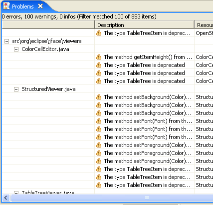
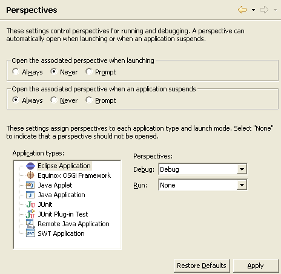

SWT
OpenGL support
You can now use OpenGL in SWT applications. The OpenGL interface works with third-party OpenGL libraries such as LWJGL.

For examples, see the SWT snippets
Virtual tree
Tree now supports the SWT.VIRTUAL style. This allows you to create trees with large amounts of data quickly. When TreeItems are needed, they are created on-demand.
For an example see the SWT snippet.
Buttons with image and text
Buttons can now show an image as well as text. This feature is supported on Windows XP, Mac OS X, and GTK.

HIView on Mac OS X
SWT now makes use of HIView on Mac OS X. This resolves many clipping and sizing issues.
Embedding objects in text
Using TextLayout, it is now possible to embed objects such as images or widgets inside text. Glyph metrics such as ascent, descent and width can be specified. Objects wrap with the text.

For an example see the SWT snippet.
Indent, align and justify text
TextLayout now supports indenting, justifying, and aligning text.

For an example see the SWT snippet.
Text baseline rise
Using TextLayout and TextStyle, it is now possible to specify the baseline rise for a range of text.

For an example see the SWT snippet.
Platform UI
Heap status can be turned off
During the 3.2 development cycle the heap monitor is on by default. We have added a preference to turn this off. It can also be closed from the pop menu in the monitor itself.


Window-level working set selection
The notion of window-level working set selection has been introduced. By default, there is a "Working Sets" action in the window tool bar that allows you to select an arbitrary selection of working sets.

Any view that is set to use the "Window Working Set" (via the traditional selection dialog) will show the contents of all selected working sets.
Problems View supports hierarchal mode
The Problems View can now display problems hierarchically as well as flat. The Sorting menu option in the view controls how the hierarchy is arranged. Categories with only a single entry are collapsed so as to minimize the depth of the tree.

Filtering in Show View dialog
The Show View dialog now provides filtering of what views appear in the list based on text provided by the user. This is the same feature that already exists in the Preferences dialog.


Import Existing Projects with copy

CVS
Improved patching support
Improvements have been made to the CVS Create Patch wizard.

Improvements to create patch include:
- the ability to create a patch that contains changes from multiple projects (this uses an Eclipse specific patch format)
- the ability to save the patch to the clipboard, workspace or file-system.
- the ability to exclude files from the patch
Changes have been made to the Apply Patch wizard to accommodate multi-project patches.
Improved conflict handling for CVS Team>Update operation
When performing an update, CVS has a file based markup for indicating conflicts. This markup can be cumbersome to work with. When performing a Team>Update, Eclipse can now be configured to update any non-conflicting files and then show any conflicts in the synchronize view. The user can then resolve the conflicts manually from there.
This support is a work in progress and is not enabled by default. To enable this support, go to the Team>CVS>Work In Progress preference page and enable the Enable client side merging on update preference.
Debug
Perspective launch settings
The perspective settings for running and debugging have been centralized on the Run/Debug > Perspectives preference page.

JDT UI
Clean Up wizard

Working set mode of Package Explorer now supports resource working sets

Note that the resource working sets used in this way are limited to referencing whole projects, not individual files or folders.
Open type dialog does consistency check in background
New Java Project wizard improvements

Java Build Path property can add link to source folder

Sort Members action excludes fields, enum constants, and initializers

JDT Core
Detection of usage of raw types

This warning can be silenced by @SuppressWarnings("unchecked").
Unnecessary cast detection improvement

CamelCase support in search engine

Detection of unused labels

Anonymous class file name change

Context-aware completion in Javadoc
- completing @pa| will give @param proposal only in the Javadoc of a method or generic type declarations,
- completing {@co| will give {@code } proposal only if your compiler compliance has been set to 1.5 or over,
- etc.

Completion in Javadoc comments

PDE
NLS wizard for plug-in manifest files
The wizard is available via PDE Tools > Externalize Strings... in the context menu of plug-in projects and their manifest files.

Java search hits in manifest files

Equinox OSGi framework launcher
An Equinox OSGi framework launch configuration can be created in the Launch Configuration dialog (Run > Run... from the top level menu).

Enhanced and automatic plug-in validation prior to launching
This function has now been enhanced to forecast more types of unsatisfied constraints that would prevent your plug-in from running.
You can also opt to have this validation done automatically prior to every launch.

Quick fixes for manifest.mf problems
- Unresolved dependencies and exports
- Misuse of the 'singleton' directive
- Replacement of deprecated attributes and directives

Organize manifest.mf files
- Unresolved imports and dependencies can be removed or made optional, based on the user's preference.
- Packages that are not accounted for in the Export-Package header are added to the list.
- Non-existent packages listed in the Export-Package header are removed.
Plug-in level custom Ant targets